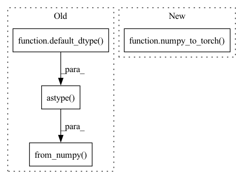

Pattern ID :21488
Before Change
A = A[:M2, in_order:]
A[0, 1:] /= 2
A[1:, 0] *= 2
self.register_buffer("A", torch.from_numpy( A.astype(default_dtype() )) .t())
def forward(self, c2):
c1 = torch.matmul(c2, self.A)After Change
A = A[:M2, in_order:]
A[0, 1:] /= 2
A[1:, 0] *= 2
self.register_buffer("A", numpy_to_torch( A.T) )
def forward(self, c2):
c1 = torch.matmul(c2, self.A)In pattern: SUPERPATTERN
Frequency: 4
Non-data size: 4
Instances Fragment ID: 68806873
Project Name: sp-nitech/diffsptk
Commit Name: 8554148138fd5ebcbc70e0af9d283a62c0175594
Time: 2023-01-30
Author: takenori.yoshimura24@gmail.com
File Name: diffsptk/core/smcep.py
M Class Name: SecondOrderAllPassInverseFrequencyTransform
N Class Name: SecondOrderAllPassInverseFrequencyTransform
M Method Name: __init__(6)
N Method Name: __init__(6)
M Parent Class: nn.Module
N Parent Class: nn.Module
M File Name: diffsptk/core/smcep.py
N File Name: diffsptk/core/smcep.py
M Start Line: 108
M End Line: 111
N Start Line: 108
N End Line: 111
Before Change
A = A[:M1]
A[1:, 0] /= 2
A[0, 1:] *= 2
self.register_buffer("A", torch.from_numpy( A.astype(default_dtype() )) )
def forward(self, c1):
c2 = torch.matmul(c1, self.A)After Change
A = A[:M1]
A[1:, 0] /= 2
A[0, 1:] *= 2
self.register_buffer("A", numpy_to_torch( A) )
def forward(self, c1):
c2 = torch.matmul(c1, self.A) Fragment ID: 68806875
Project Name: sp-nitech/diffsptk
Commit Name: 8554148138fd5ebcbc70e0af9d283a62c0175594
Time: 2023-01-30
Author: takenori.yoshimura24@gmail.com
File Name: diffsptk/core/smcep.py
M Class Name: SecondOrderAllPassFrequencyTransform
N Class Name: SecondOrderAllPassFrequencyTransform
M Method Name: __init__(6)
N Method Name: __init__(6)
M Parent Class: nn.Module
N Parent Class: nn.Module
M File Name: diffsptk/core/smcep.py
N File Name: diffsptk/core/smcep.py
M Start Line: 75
M End Line: 78
N Start Line: 75
N End Line: 78
Before Change
if 2 <= M1:
A[1:M1] += np.flip(A[-(M1 - 1) :], axis=0)
A = A[:M1]
self.register_buffer("A", torch.from_numpy( A.astype(default_dtype() )) )
def forward(self, c1):
c2 = torch.matmul(c1, self.A)After Change
if 2 <= M1:
A[1:M1] += np.flip(A[-(M1 - 1) :], axis=0)
A = A[:M1]
self.register_buffer("A", numpy_to_torch( A) )
def forward(self, c1):
c2 = torch.matmul(c1, self.A) Fragment ID: 68806874
Project Name: sp-nitech/diffsptk
Commit Name: 8554148138fd5ebcbc70e0af9d283a62c0175594
Time: 2023-01-30
Author: takenori.yoshimura24@gmail.com
File Name: diffsptk/core/smcep.py
M Class Name: CoefficientsFrequencyTransform
N Class Name: CoefficientsFrequencyTransform
M Method Name: __init__(6)
N Method Name: __init__(6)
M Parent Class: nn.Module
N Parent Class: nn.Module
M File Name: diffsptk/core/smcep.py
N File Name: diffsptk/core/smcep.py
M Start Line: 142
M End Line: 143
N Start Line: 142
N End Line: 143
Before Change
w /= np.sum(w)
else:
raise ValueError(f"norm {norm} is not supported")
self.register_buffer("window", torch.from_numpy( w.astype(default_dtype() )) )
// Make padding module.
if out_length is None or in_length == out_length:After Change
w /= np.sum(w)
else:
raise ValueError(f"norm {norm} is not supported")
self.register_buffer("window", numpy_to_torch( w) )
// Make padding module.
if out_length is None or in_length == out_length: Fragment ID: 68806876
Project Name: sp-nitech/diffsptk
Commit Name: 8554148138fd5ebcbc70e0af9d283a62c0175594
Time: 2023-01-30
Author: takenori.yoshimura24@gmail.com
File Name: diffsptk/core/window.py
M Class Name: Window
N Class Name: Window
M Method Name: __init__(5)
N Method Name: __init__(5)
M Parent Class: nn.Module
N Parent Class: nn.Module
M File Name: diffsptk/core/window.py
N File Name: diffsptk/core/window.py
M Start Line: 79
M End Line: 79
N Start Line: 78
N End Line: 78